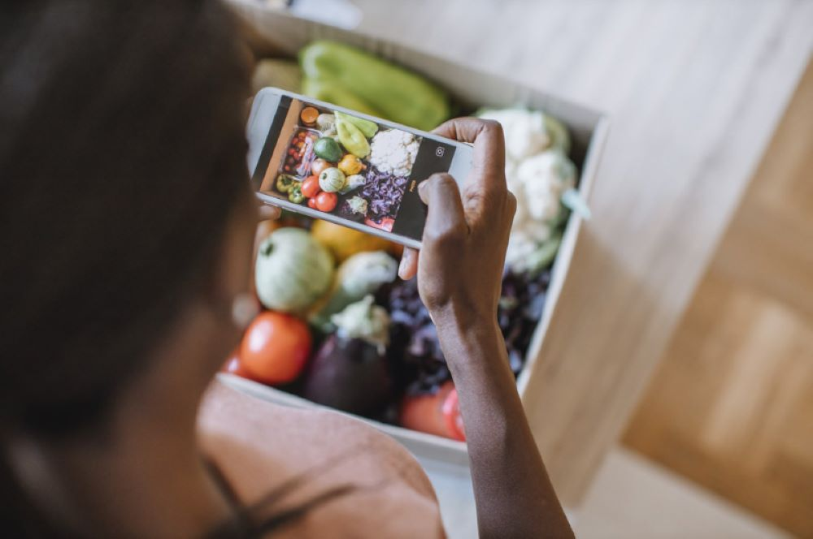

Farmer Training
Hands-on workshops on modern farming techniques, seed selection, irrigation, and post-harvest handling.

Register Your FarmLIDI provides practical, on-the-ground support to rural Liberian farmers.
Hands-on workshops on modern farming techniques, seed selection, irrigation, and post-harvest handling.
Guidance on crop rotation, organic fertilizers, and soil conservation to protect Liberia's farmland.
Small loans and savings programs to help farmers buy seeds, tools, and equipment without falling into debt.
We connect farmers directly to urban buyers and international export partners through our e-marketplace.
Help establishing and managing farmer cooperatives so communities can negotiate better prices together.
Assistance with export documentation, quality control, and international buyer connections.
Register your farm with LIDI — it's free for smallholder farmers.
Register Your Farm